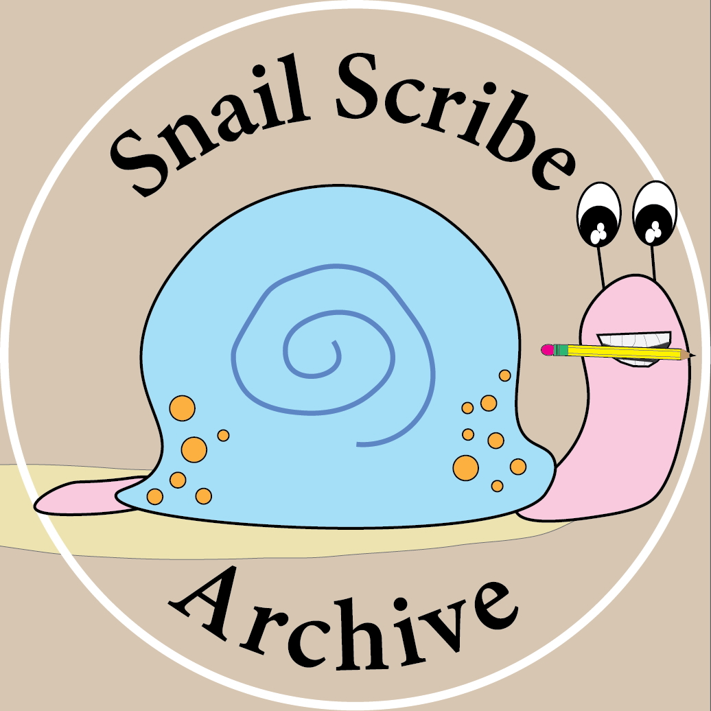

Outreach
Increasing participation in science
Mentorship
The best part of science in my experience is working with students. I have been lucky to work with many talented graduate, undergraduate, and high school students on research and digitization projects. The past two summers I had the privilege to mentor three undergraduates through the Women in Science and Illinois Louis Stokes Alliance for Minority Participation. We used morphometrics and Field Museum collections to assess the ecological drivers of phenotypic plasticity and DNA barcoding to identify epibionts of freshwater mussel shells. We are actively working on manuscripts for both projects.


Citizen Science
In the digital age, we can now collaborate with citizen scientists across the globe. In my previous position at the Field Museum, our Invertebrate Zoology Collection contained thousands of specimens that were undigitized, catalogued specimens whose metadata were unknown to researchers outside the museum. Luckily, we had all the data in handwritten ledgers, we just needed to transcribe these data to make specimens findable and accessible. Enter our Zooniverse project: Snail Scribe Archive, where a team of volunteers, interns, and myself, scanned all 10,000+ pages of these ledgers and served them on Zooniverse for people-powered transcription. This is an ongoing project and we encourage all to participate.
Community engagement
Whether it is a classroom visit, a museum collection tour, or a bioblitz, I really enjoy using biodiversity as a platform for education, curiosity, and human connection.